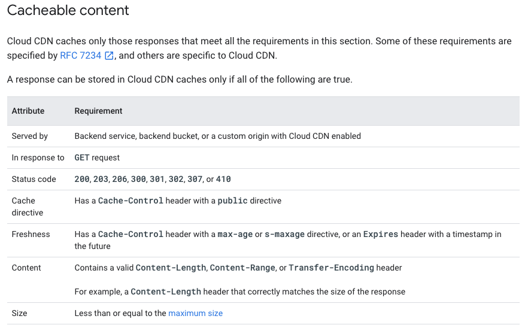
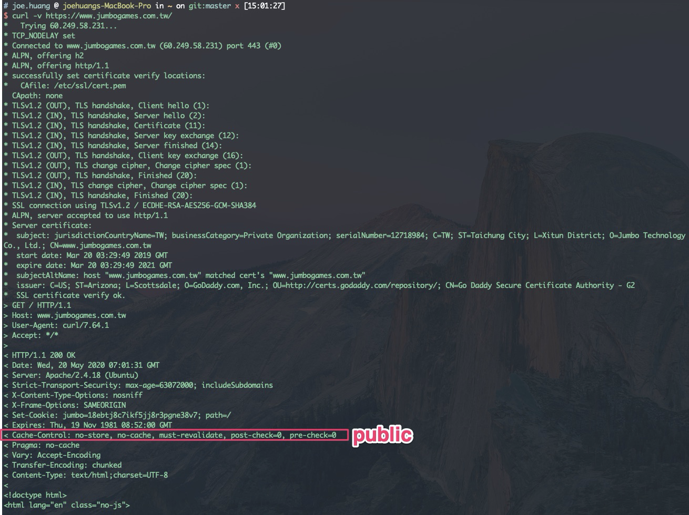

[GCP] 透過Content Header 確認 Cloud CDN Cache 加速 | Through Content Header Ensoure CDN Speed up
Status: Completed
Cloud CDN Cache
根據Cloud CDN[1] 文件，web header需要符合以下條件才能被cache
因此，CDN 沒有針對特別檔案或副檔名啟用cache功能與否，特別要注意的是
Cache directive這個值要為public，對應curl -v 結果可以看到header content-control，此欄位應有public才能被cache另外，如果要讓伺服務response header 符合
cacheable content，請確認web server設定，response header 必需加上Cache-Control →public
以ngnix為例[2]
1 | # Adding response headers |
2 | |
3 | add_header X-Frame-Options SAMEORIGIN; |
4 | add_header X-Content-Type-Options nosniff; |
Cloud CDN文件[1]

Header 驗證
- 察看
curl -v結果- 使用
-v是為了輸出更多的結果以利了解header情況 - -v /
--verbose輸出更多的訊息方便 debug
- 使用
Finding1
- 發現這個網站
header沒有public，因此即使使用了CDN，這個網頁也不會享有cache加速

Finding2
- istio.io 網站
header顯示public，因此可以正常使用cache加速
參考
[1] https://cloud.google.com/cdn/docs/caching?hl=zh-tw
[2] https://blog.confirm.ch/adding-and-removing-nginx-response-headers/